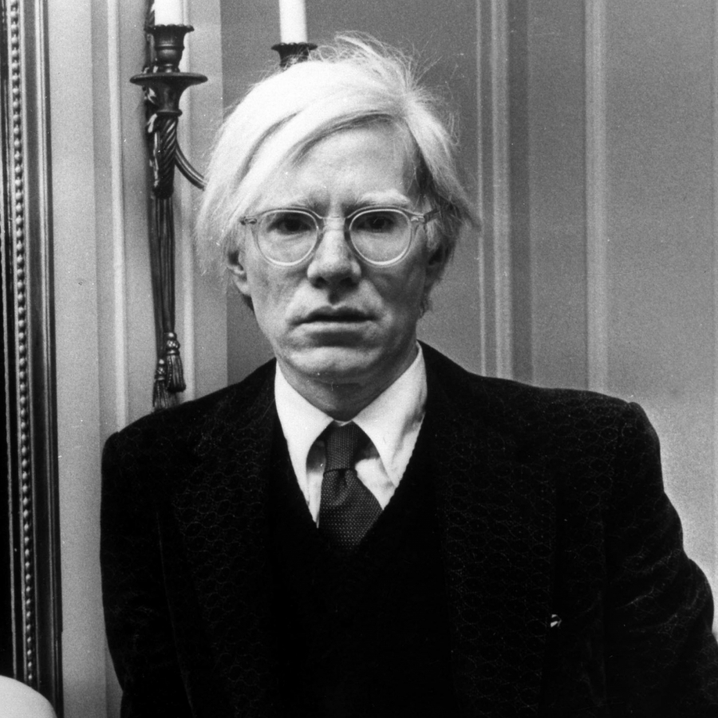
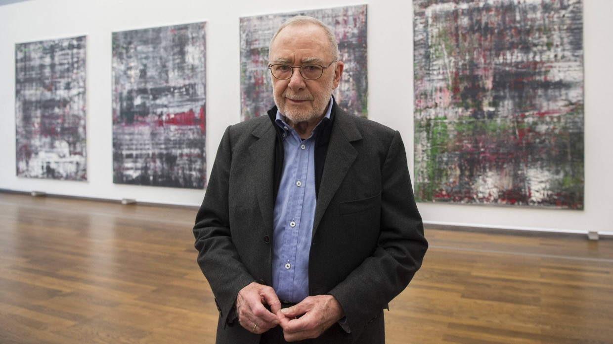

Andy Warhol
| Origem | Estados Unidos |
| Estilo | Pop Art |
| Obras Icônicas | "Campbell's Soup Cans," "Marilyn Diptych" |
| Destaque | Warhol revolucionou a arte ao transformar objetos cotidianos em ícones artísticos e ao utilizar técnicas de produção em massa. Sua obra questiona o consumismo e a relação entre a arte e a cultura de massa. |
Bill Viola
| Origem | Estados Unidos |
| Estilo | Arte multimídia, vídeo |
| Obras Icônicas | "The Crossing," "Stations of the Cross" |
| Destaque | Viola é um dos pioneiros da arte em vídeo, utilizando a tecnologia para explorar temas como a vida, a morte e a espiritualidade. Seus vídeos imersivos muitas vezes têm um forte componente emocional. |
Marina Abramović
| Origem | Sérvia |
| Estilo | Performance Art |
| Obras Icônicas | "The Artist is Present," "Rhythm 0" |
| Destaque | Abramović é uma das principais figuras da arte performática. Sua obra explora o limite físico e emocional do corpo humano e a relação com o público, criando experiências imersivas e muitas vezes intensas. |

Gerhard Richter
| Origem | Alemanha |
| Estilo | Pintura abstrata e figurativa |
| Obras Icônicas | "Betty," "Candle" |
| Destaque | Richter é conhecido por sua versatilidade, alternando entre a pintura abstrata e figurativa. Seu trabalho aborda a relação entre a memória, o tempo e a verdade histórica, frequentemente com uma abordagem emocionalmente ambígua. |